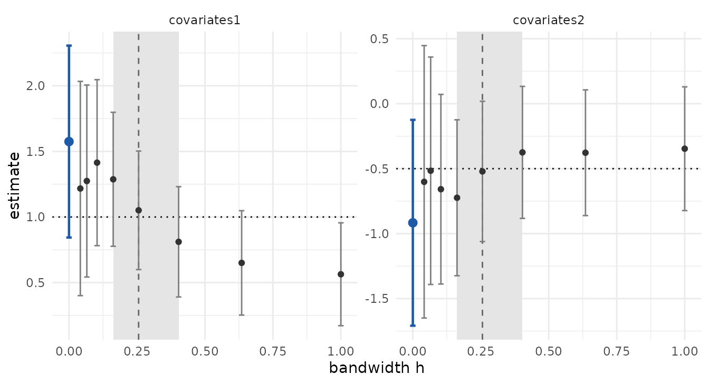

The problem
Every estimator in skmle pairs the outcome at time \(t\) with covariates observed up to \(h\) earlier, weighted by a kernel with
bandwidth \(h\). The lag acts as
measurement error and attenuates the coefficients; for a covariate that
changes by jumps, the bias is linear in \(h\). The estimators converge at rate \((nh)^{1/2}\), so the standard deviation
grows as \(h\) shrinks, and at the
bandwidth that minimises the mean squared error the bias and the
standard deviation are of the same order. A Wald interval centred on the
estimate at that bandwidth therefore undercovers: with bias of order
\(h\), the asymptotic coverage of the
nominal 95% interval is 0.891.
skmle_cv() does not fix this. Its held-out score
measures prediction of the hazard, its selected bandwidth converges to a
constant set by the visit process rather than to zero, and the
coefficients at h_cv stay biased for \(\beta\) at every sample size. In
simulation, the interval for \(\beta_1\) at the cross-validated bandwidth
had coverage between 0.760 and 0.880. skmle_cv() chooses a
bandwidth for prediction; the functions below are for inference on \(\beta\).
The method
skmle_bc(), kee_cox_bc() and
kee_async_bc() share one procedure.
- Fit the estimator at each bandwidth of a grid \(h_1 < \dots < h_H\).
- Model the mean of \(\hat\beta_h\) as \(\beta_0 + c h + e/h\), where \(e/h\) is a small-sample term. For each coefficient, estimate \(c\) and \(e\) by a regression of \(\hat\beta_h\) on \((1, h, 1/h)\) across the grid, weighted by the inverse sandwich variances.
- Select \(\hat h\), the grid point that minimises the estimated mean squared error summed over coefficients, \(\sum_k \{(\hat c_k h + \hat e_k / h)^2 + \widehat{\mathrm{var}}(\hat\beta_{k,h})\}\).
- Regress \(\hat\beta_h\) on \((1, h)\) over the grid points in \([\hat h/2, 2\hat h]\), with the same weights. The intercept is the estimate extrapolated to \(h = 0\).
The extrapolated estimate is a linear combination \(\sum_j a_j \hat\beta_{h_j}\) of the grid estimates. Its variance needs the covariance between estimates at two bandwidths, which follows from the per-subject score contributions that every fit already computes. A parametric bootstrap of the grid then adds the variance from choosing \(\hat h\) and the window from the same data: grids are drawn from the joint normal approximation of the estimates, and steps 3 and 4 are rerun on each draw without refitting.
A fit with skmle_bc()
The data come from sim_skmle_data() under the Cox model
(\(s = 0\)) with \(\beta = (1, -0.5)\) and 200 subjects.
library(skmle)
library(survival)
library(ggplot2)
set.seed(123)
dat <- sim_skmle_data(
n = 200,
mu = function(tt) 8 * (0.75 + (0.5 - tt)^2),
mu_bar = 8,
alpha = function(tt) 0.5 * 0.75 + 0.75 * (tt * (1 - sin(2 * pi * (tt - 0.25)))),
beta = c(1, -0.5),
s = 0,
cen = 0.7
)
bc <- skmle_bc(Surv(X, delta) ~ covariates, data = dat, id = id,
obs_times = obs_times, s = 0, n_h = 8, n_boot = 500,
seed = 1, quiet = TRUE)
bc
#> Call:
#> skmle_bc(formula = Surv(X, delta) ~ covariates, data = dat, id = id,
#> obs_times = obs_times, s = 0, n_h = 8, n_boot = 500, seed = 1,
#> quiet = TRUE)
#>
#> Selected h = 0.256 (plug-in MSE); extrapolated (degree 1) over h in [0.1626, 0.4032]
#>
#> Bias-corrected coefficients:
#> covariates1 covariates2
#> 1.5748191 -0.9164907With h_grid = NULL, the grid holds n_h
bandwidths log-spaced from the larger of the smallest positive lag and
\(\tau n^{-0.6}\) up to \(\tau = \max_i X_i\). The default
n_h is 12; this vignette uses 8 to run quickly.
print() reports \(\hat
h\), the window of the extrapolation and the extrapolated
coefficients.
summary(bc)
#> Call:
#> skmle_bc(formula = Surv(X, delta) ~ covariates, data = dat, id = id,
#> obs_times = obs_times, s = 0, n_h = 8, n_boot = 500, seed = 1,
#> quiet = TRUE)
#>
#> Selected h = 0.256; extrapolated over h in [0.1626, 0.4032]
#>
#> estimate std.error z p.value estimate_at_h std.error_at_h
#> covariates1 1.5748 0.3731 4.221 2.433e-05 1.0510 0.2304
#> covariates2 -0.9165 0.4041 -2.268 2.334e-02 -0.5212 0.2755estimate and std.error are the extrapolated
estimate and its standard error, and z and
p.value are computed from them. estimate_at_h
and std.error_at_h come from the skmle() fit
at \(\hat h\), without
extrapolation.
The component grid holds one row per bandwidth and
coefficient, with the estimate, its standard error, the estimated bias
and the estimated mean squared error.
head(bc$grid, 4)
#> h term estimate std.error bias mse
#> 1 0.04162766 covariates1 1.2171891 0.4165038 0.15872294 0.4860577
#> 2 0.04162766 covariates2 -0.6012871 0.5348111 -0.03696462 0.4860577
#> 3 0.06555611 covariates1 1.2742847 0.3733299 0.07157512 0.3440497
#> 4 0.06555611 covariates2 -0.5160541 0.4465599 -0.01164903 0.3440497The plot below shows the estimate against the bandwidth.
ext <- data.frame(
term = names(bc$coefficients),
h = 0,
estimate = bc$coefficients,
std.error = sqrt(diag(bc$var))
)
truth <- data.frame(term = names(bc$coefficients), value = c(1, -0.5))
ggplot(bc$grid, aes(h, estimate)) +
annotate("rect", xmin = min(bc$window), xmax = max(bc$window),
ymin = -Inf, ymax = Inf, fill = "grey90") +
geom_vline(xintercept = bc$h, linetype = "dashed", colour = "grey40") +
geom_hline(data = truth, aes(yintercept = value), linetype = "dotted") +
geom_errorbar(aes(ymin = estimate - 1.96 * std.error,
ymax = estimate + 1.96 * std.error),
width = 0.02, colour = "grey50") +
geom_point(colour = "grey20") +
geom_errorbar(data = ext, aes(ymin = estimate - 1.96 * std.error,
ymax = estimate + 1.96 * std.error),
width = 0.02, colour = "#1f5aa6", linewidth = 0.8) +
geom_point(data = ext, colour = "#1f5aa6", size = 2.5) +
facet_wrap(~ term, scales = "free_y") +
labs(x = "bandwidth h", y = "estimate") +
theme_minimal()
Grey points are the estimates at each bandwidth with \(\pm 1.96\) standard errors. The shaded band
is the window, the dashed line is \(\hat
h\), the dotted line is the true value, and the blue point at
\(h = 0\) is the extrapolated estimate
with \(\pm 1.96\) standard errors from
bc$var. Over the larger bandwidths the estimates shrink
towards zero as \(h\) grows, and the
standard errors grow as \(h\)
shrinks.
The 95% intervals from the extrapolated estimate and from the fit at \(\hat h\):
se_bc <- sqrt(diag(bc$var))
se_h <- sqrt(diag(bc$fit$var))
round(cbind(
truth = c(1, -0.5),
bc_lower = bc$coefficients - 1.96 * se_bc,
bc_upper = bc$coefficients + 1.96 * se_bc,
at_h_lower = bc$fit$coefficients - 1.96 * se_h,
at_h_upper = bc$fit$coefficients + 1.96 * se_h
), 3)
#> truth bc_lower bc_upper at_h_lower at_h_upper
#> covariates1 1.0 0.844 2.306 0.599 1.503
#> covariates2 -0.5 -1.709 -0.124 -1.061 0.019In this sample both kinds of interval contain the true values. The extrapolated intervals are wider, and their centres sit further from the truth than the estimates at \(\hat h\); the simulation results at the end describe the behaviour over repeated samples.
Reading the output
coefficients and fit
bc$coefficients and bc$var are the
extrapolated estimate and its covariance; use them for intervals and
tests. bc$fit is the complete skmle() fit at
\(\hat h\), so every skmle
method applies to it, for example plot(bc$fit) for the
baseline hazard. Its coefficients have a smaller variance but carry a
bias of order \(\hat h\), which its
standard error does not include.
var and var_fixed
cbind(se_var = sqrt(diag(bc$var)), se_var_fixed = sqrt(diag(bc$var_fixed)))
#> se_var se_var_fixed
#> covariates1 0.3730961 0.3146449
#> covariates2 0.4041302 0.3663607var_fixed treats \(\hat
h\) and the window as fixed. var adds the variance
from selecting them, estimated from n_boot simulated grids.
With n_boot = 0, var equals
var_fixed.
window and weights
bc$window
#> [1] 0.1625831 0.2560393 0.4032160
bc$weights
#> covariates1 covariates2
#> 0.04163 0.0000000 0.0000000
#> 0.06556 0.0000000 0.0000000
#> 0.10324 0.0000000 0.0000000
#> 0.16258 1.2639104 1.2795870
#> 0.25604 0.6731882 0.6475569
#> 0.40322 -0.9370985 -0.9271439
#> 0.63499 0.0000000 0.0000000
#> 1.00000 0.0000000 0.0000000window lists the grid points used in the extrapolation.
weights holds the coefficients \(a_j\) of the linear combination, one row
per grid point and one column per coefficient, and is zero outside the
window. Because they produce the intercept of a regression on \((1, h)\), each column sums to 1 and
satisfies \(\sum_j a_j h_j = 0\):
h_grid <- unique(bc$grid$h)
round(rbind(sum_a = colSums(bc$weights),
sum_a_h = colSums(bc$weights * h_grid)), 10)
#> covariates1 covariates2
#> sum_a 1 1
#> sum_a_h 0 0The negative weight on the largest bandwidth in the window moves the estimate beyond the grid estimates towards \(h = 0\).
degree
degree = 1, the default, removes a bias linear in \(h\), which is the bias of a one-sided
kernel such as the default kernel of skmle() and
kee_cox(). degree = 2 fits \(\beta_0 + c_1 h + c_2 h^2 + e/h\) and
extrapolates with a quadratic, which also removes a term in \(h^2\) at the cost of a larger variance. An
\(h^2\) term arises with a two-sided
kernel on a smooth covariate path; there linear extrapolation leaves a
remainder of order \(\hat h^2\), which
is small relative to the standard error at \(\hat h\).
bc2 <- update(bc, degree = 2)
round(cbind(
degree1 = bc$coefficients, se1 = sqrt(diag(bc$var)),
degree2 = bc2$coefficients, se2 = sqrt(diag(bc2$var))
), 3)
#> degree1 se1 degree2 se2
#> covariates1 1.575 0.373 0.623 0.582
#> covariates2 -0.916 0.404 -0.083 0.712
c(h_degree1 = bc$h, h_degree2 = bc2$h)
#> h_degree1 h_degree2
#> 0.2560393 0.1032391In this sample degree = 2 selects a smaller bandwidth,
because the bias model has changed, and its standard errors are larger
than those of degree = 1.
n_boot and seed
Each of the n_boot simulated grids (2000 by default) is
a draw from the normal distribution with mean the grid estimates and
covariance bc$cov_all; the selection and extrapolation are
rerun on each draw and var is the covariance of the
results. No model is refitted, so the step takes seconds.
seed sets the random number generator before the draws,
which makes var reproducible; with seed = NULL
the current state of the generator is used and var changes
slightly from call to call.
The endpoint warning
If \(\hat h\) is the smallest or largest bandwidth of the grid, the estimated mean squared error has no interior minimum on the grid and the window extends to one side of \(\hat h\) only. The functions then warn. A grid restricted to large bandwidths shows it:
bc_narrow <- update(bc, h_grid = exp(seq(log(0.4), log(1), length.out = 5)))
#> Warning: the selected bandwidth is an endpoint of 'h_grid'; widen the grid
bc_narrow$h
#> [1] 1With the small bandwidths left out of the grid, the selection goes to
the largest bandwidth. The remedy is to widen h_grid and
refit, here towards small bandwidths; the default grid already runs from
the smallest positive lag to \(\tau\).
A grid point whose fit fails or whose variance is unusable is dropped,
also with a warning, and at least four usable bandwidths are
required.
The estimating-equation estimators
kee_cox_bc() applies the same procedure to
kee_cox() and uses the same default grid. Arguments of
kee_cox() such as one_sided and
weight pass through ....
kc <- kee_cox_bc(Surv(X, delta) ~ covariates, data = dat, id = id,
obs_times = obs_times, n_h = 8, n_boot = 500, seed = 1,
quiet = TRUE)
summary(kc)
#> Call:
#> kee_cox_bc(formula = Surv(X, delta) ~ covariates, data = dat,
#> id = id, obs_times = obs_times, n_h = 8, n_boot = 500, seed = 1,
#> quiet = TRUE)
#>
#> Selected h = 0.256; extrapolated over h in [0.1626, 0.4032]
#>
#> estimate std.error z p.value estimate_at_h std.error_at_h
#> covariates1 1.5950 0.3899 4.091 4.302e-05 1.0415 0.2343
#> covariates2 -0.8852 0.4348 -2.036 4.177e-02 -0.5197 0.3071kee_async_bc() applies it to kee_async(),
which uses a two-sided kernel by default. Its default grid runs from
\(2\,\mathrm{IQR}\,n^{-0.6}\) to the
range of the pooled observation times, where IQR is their interquartile
range. The data come from sim_async_data() with \(\beta = (0.5, 1.5)\).
set.seed(2024)
d <- sim_async_data(n = 200, beta = c(0.5, 1.5))
ka <- kee_async_bc(d$y, d$x, y ~ x, id = id, time = time, n_h = 8,
n_boot = 500, seed = 1, quiet = TRUE)
summary(ka)
#> Call:
#> kee_async_bc(data_y = d$y, data_x = d$x, formula = y ~ x, id = id,
#> time = time, n_h = 8, n_boot = 500, seed = 1, quiet = TRUE)
#>
#> Selected h = 0.1602; extrapolated over h in [0.1014, 0.2532]
#>
#> estimate std.error z p.value estimate_at_h std.error_at_h
#> (Intercept) 0.5283 0.09966 5.301 1.152e-07 0.4875 0.09165
#> x 1.5568 0.08759 17.774 1.122e-70 1.4646 0.07192Simulation results
In simulations with 1000 replicates per cell and \(n\) from 200 to 3200, the nominal 95%
interval for \(\beta_1\) from
skmle_bc() had coverage between 0.936 and 0.960 for \(s \in \{0, 0.5, 1\}\). The interval at the
selected bandwidth without extrapolation had coverage between 0.720 and
0.770 at \(n = 3200\).
kee_cox_bc() gave coverage between 0.938 and 0.956. For the
slope in the asynchronous model, with an Ornstein-Uhlenbeck covariate
(covariance \(\exp(-|s - t|)\)) and a
two-sided kernel, kee_async_bc() gave coverage between
0.929 and 0.950, while the split-half selector of Cao, Zeng and Fine
(2015) gave 0.869 at \(n = 200\),
falling to 0.783 at \(n = 3200\).